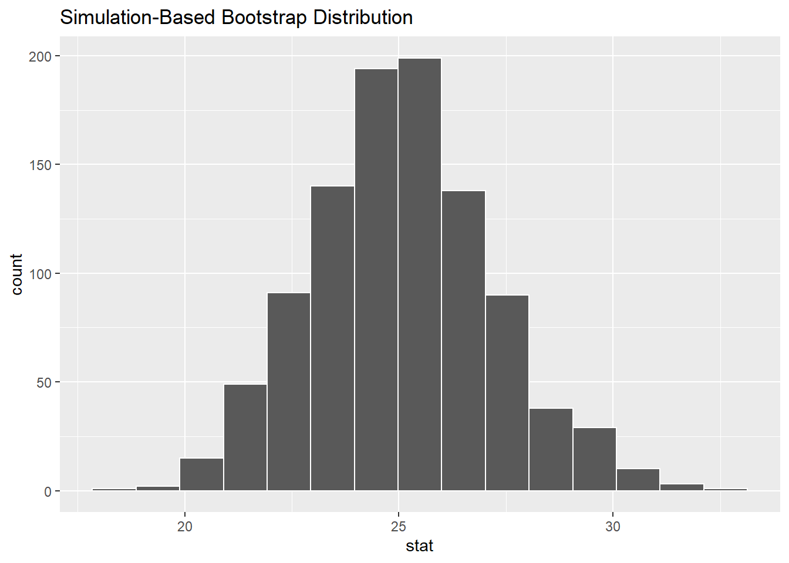
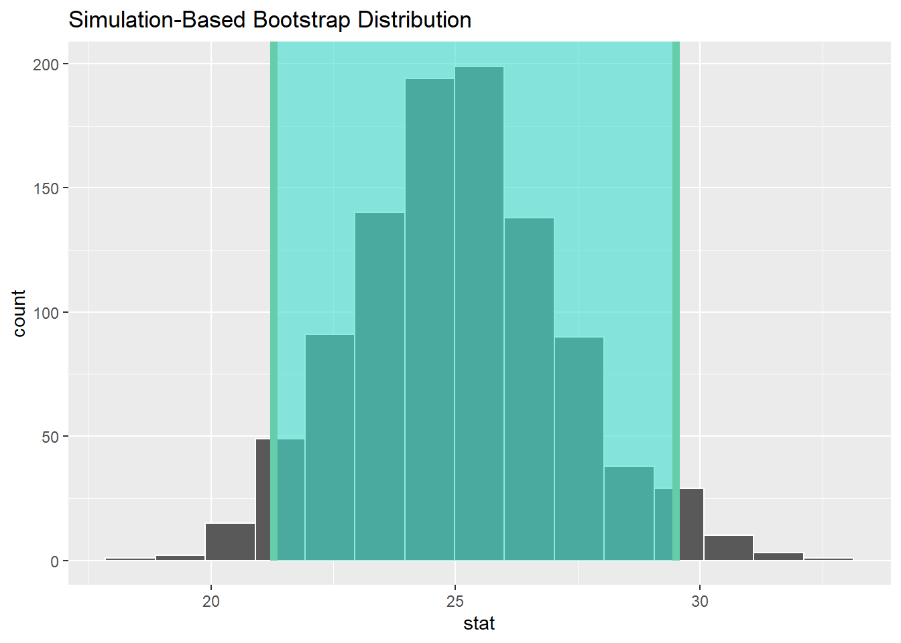
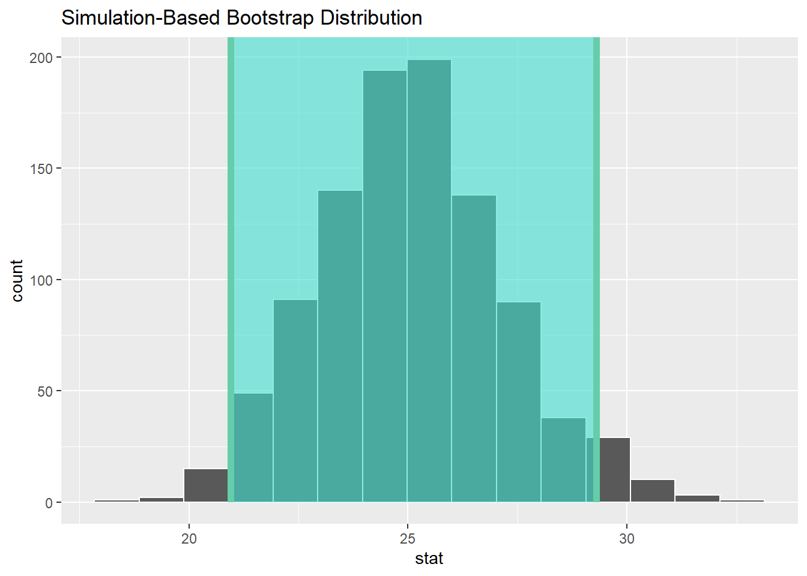

Constructing confidence intervals
A confidence interval gives a range of plausible values for a population parameter. It depends on a specified confidence level with higher confidence levels corresponding to wider confidence intervals and lower confidence levels corresponding to narrower confidence intervals. Common confidence levels include 90%, 95%, and 99%.
Confidence intervals play an important role in the sciences and any field that uses data. You can think of a confidence interval as playing the role of a net when fishing. Instead of just trying to catch a fish with a single spear (estimating an unknown parameter by using a single point estimate/sample statistic), we can use a net to try to provide a range of possible locations for the fish (use a range of possible values based around our sample statistic to make a plausible guess as to the location of the parameter).
The bootstrapping process provides bootstrap statistics that have a bootstrap distribution with center at (or extremely close to) the mean of the original sample. This can be seen by giving the observed statistic obs_stat argument the value of the point estimate x_bar.
bootstrap_distribution %>%
visualize(obs_stat = x_bar)
We can also compute the mean of the bootstrap distribution of means to see how it compares to x_bar:
bootstrap_distribution %>%
summarize(mean_of_means = mean(stat))# A tibble: 1 x 1
mean_of_means
<dbl>
1 25.1As we noted in the previous section, the bootstrap distribution provides an estimate of the sampling distribution of the sample mean, i.e. what the variability in different sample means from different samples of the same size may look like, only using the original sample as our guide. We can quantify this variability in the form of a 95% confidence interval in two different ways.
1. The percentile method
One way to calculate a range of plausible values for the unknown mean age of coins in 2011 is to use the middle 95% of the bootstrap_distribution to determine our endpoints. Our endpoints are thus at the 2.5th and 97.5th percentiles. This can be done with infer using the get_ci() function. (You can also use the conf_int() or get_confidence_interval() functions here as they are aliases that work the exact same way.)
bootstrap_distribution %>%
get_ci(level = 0.95, type = "percentile")# A tibble: 1 x 2
lower_ci upper_ci
<dbl> <dbl>
1 21.3 29.5These options are the default values for level and type so we can also just do:
percentile_ci <- bootstrap_distribution %>%
get_ci()
percentile_ci# A tibble: 1 x 2
lower_ci upper_ci
<dbl> <dbl>
1 21.3 29.5Using the percentile method, our range of plausible values for the mean age of US pennies in circulation in 2011 is 21.27 years to 29.5 years. We can use the shade_confidence_interval() function to view this using the endpoints and direction arguments, setting direction to "between" (between the values) and endpoints to be those stored with name percentile_ci.
bootstrap_distribution %>%
visualize() +
shade_confidence_interval(endpoints = percentile_ci, direction = "between")
You can see that 95% of the data stored in the stat variable in bootstrap_distribution falls between the two endpoints with 2.5% to the left outside of the shading and 2.5% to the right outside of the shading. The cut-off points that provide our range are shown with the darker lines.
2. The standard error method
If the bootstrap distribution is close to symmetric and bell-shaped, we can also use a shortcut formula for determining the lower and upper endpoints of the confidence interval. This is done by using the formula \(\bar{x} \pm (multiplier * SE),\) where \(\bar{x}\) is our original sample mean and \(SE\) stands for standard error and corresponds to the standard deviation of the bootstrap distribution.
The standard error is the standard deviation of the sampling distribution.
The variability of the sampling distribution may be approximated by the variability of the bootstrap distribution. Traditional theory-based methodologies for inference also have formulas for standard errors, assuming some conditions are met (you will have seen some of these in Statistical Inference in Semester 1).
The value of \(multiplier\) here is the appropriate percentile of the standard normal distribution. This is automatically calculated when level is provided with level = 0.95 being the default. (95% of the values in a standard normal distribution fall within 1.96 standard deviations of the mean, so multiplier = 1.96 corresponds to level = 0.95, for example.) As mentioned, this formula assumes that the bootstrap distribution is symmetric and bell-shaped. This is often the case with bootstrap distributions, especially those in which the original distribution of the sample is not highly skewed.
This \(\bar{x} \pm (multiplier * SE)\) formula is implemented in the get_ci() function as shown with our pennies problem using the bootstrap distribution's variability as an approximation for the sampling distribution's variability. We'll see more on this approximation shortly.
Note that the center of the confidence interval (the point_estimate) must be provided for the standard error confidence interval.
standard_error_ci <- bootstrap_distribution %>%
get_ci(type = "se", point_estimate = x_bar)
standard_error_ci# A tibble: 1 x 2
lower_ci upper_ci
<dbl> <dbl>
1 21.0 29.3bootstrap_distribution %>%
visualize() +
shade_confidence_interval(endpoints = standard_error_ci, direction = "between")
We see that both methods produce nearly identical confidence intervals with the percentile method being \([21.27, 29.5]\) and the standard error method being \([20.95, 29.3]\).